第 7 周
12、 支持向量机(Support Vector Machines)
12.1 优化目标
参考视频: 12 - 1 - Optimization Objective (15 min).mkv
到目前为止,你已经见过一系列不同的学习算法。在监督学习中，许多学习算法的性能都非常类似，因此，重要的不是你该选择使用学习算法 A 还是学习算法 B，而更重要的是，应用这些算法时，所创建的大量数据在应用这些算法时，表现情况通常依赖于你的水平。比如：你为学习算法所设计的特征量的选择，以及如何选择正则化参数，诸如此类的事。还有一个更加强大的算法广泛的应用于工业界和学术界，它被称为支持向量机(Support VectorMachine)。与逻辑回归和神经网络相比，支持向量机，或者简称 SVM，在学习复杂的非线性方程时提供了一种更为清晰，更加强大的方式。因此，在接下来的视频中，我会探讨这一算法。在稍后的课程中，我也会对监督学习算法进行简要的总结。当然，仅仅是作简要描述。但对于支持向量机，鉴于该算法的强大和受欢迎度，在本课中，我会花许多时间来讲解它。它也是我们所介绍的最后一个监督学习算法。
正如我们之前开发的学习算法，我们从优化目标开始。那么，我们开始学习这个算法。为了描述支持向量机，事实上，我将会从逻辑回归开始展示我们如何一点一点修改来得到本质上的支持向量机。
Alternative view of logistic regression
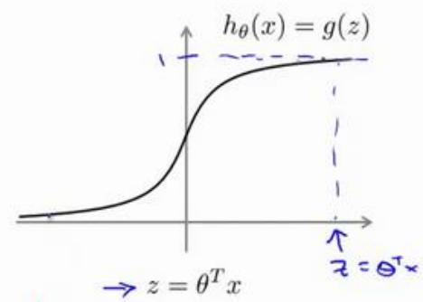
If y = 1, we want \(h_{\theta} ( x ) \approx 1 , \theta^{T} x \gg 0\)
If y = 0, we want \(h_{\theta} ( x ) \approx 0 , \theta^{T} x \ll 0\)
那么，在逻辑回归中我们已经熟悉了这里的假设函数形式，和右边的 S型激励函数。然而，为了解释一些数学知识.我将用z 表示 \(\theta^{T} x\)
现在考虑下我们想要逻辑回归做什么：如果有一个 y = 1的样本，我的意思是不管是在训练集中或是在测试集中，又或者在交叉验证集中，总之是 y = 1，现在我们希望 \(h_{\theta} ( x )\) 趋近1。因为我们想要正确地将此样本分类，这就意味着当 \(h_{\theta} ( x )\) 趋近于1 时， \(\theta^{T} x\) 应当远大于0，这里的>>意思是远远大于0。这是因为由于 z 表示 \(\theta^{T} x\) ，当 z远大于0 时，即到了该图的右边，你不难发现此时逻辑回归的输出将趋近于 1。相反地，如果我们有另一个样本，即y = 0。我们希望假设函数的输出值将趋近于0，这对应于 \(\mathbf{\nabla} \cdot \theta^{T} \boldsymbol{x}\) ，或者就是 z 会远小于0，因为对应的假设函数的输出值趋近0。
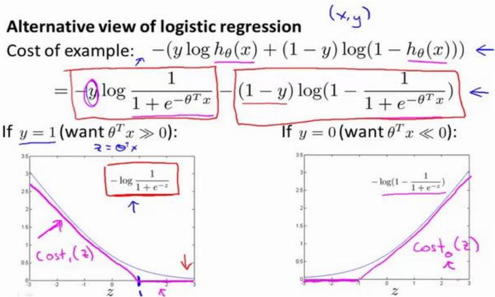
如果你进一步观察逻辑回归的代价函数，你会发现每个样本 \(( x , y )\) 都会为总代价函数，增加这里的一项，因此，对于总代价函数通常会有对所有的训练样本求和，并且这里还有一个1/m项，但是，在逻辑回归中，这里的这一项就是表示一个训练样本所对应的表达式。现在，如果我将完整定义的假设函数代入这里。那么，我们就会得到每一个训练样本都影响这一项。
现在，先忽略 1/m 这一项，但是这一项是影响整个总代价函数中的这一项的。
现在，一起来考虑两种情况：
一种是y等于1的情况；另一种是 y 等于0 的情况。
在第一种情况中，假设 y = 1 ，此时在目标函数中只需有第一项起作用，因为y = 1时，(1−y)项将等于 0。因此，当在 y = 1 的样本中时，即在 (x, y)中 ，我们得到 y = 1\(\begin{array} {r} {- \log ( 1 - \frac{1} {1 + e^{- z}} )} \end{array}\) 这样一项，这里同上一张幻灯片一致。
我用 z 表示 \(\mathbf{\nabla} \cdot \theta^{T} \boldsymbol{x} .\) ，即： \(z = \theta^{T} x\) 。当然，在代价函数中，z 前面有负号。我们只是这样表示，如果 \(y = 1\) 代价函数中，这一项也等于1。这样做是为了简化此处的表达式。如果画出关于z 的函数，你会看到左下角的这条曲线，我们同样可以看到，当z 增大时，也就是相当于 \(\theta^{T} x\) 增大时，z 对应的值会变的非常小。对整个代价函数而言，影响也非常小。这也就解释了，为什么逻辑回归在观察到正样本y = 1时，试图将 \({\boldsymbol{\theta}} ^{T} {\boldsymbol{x}}\) 设置得非常大。因为，在代价函数中的这一项会变的非常小。
现在开始建立支持向量机，我们从这里开始：
我们会从这个代价函数开始，也就是 \(\begin{array} {r} {- \log ( 1 - \frac{1} {1 + e^{- z}} )} \end{array}\) 一点一点修改，让我取这里的 \(\vert z = 1\) 点，我先画出将要用的代价函数。
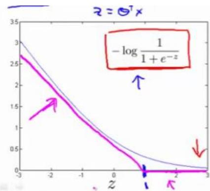
新的代价函数将会水平的从这里到右边(图外)，然后我再画一条同逻辑回归非常相似的直线，但是，在这里是一条直线，也就是我用紫红色画的曲线，就是这条紫红色的曲线。那么，到了这里已经非常接近逻辑回归中使用的代价函数了。只是这里是由两条线段组成，即位于右边的水平部分和位于左边的直线部分，先别过多的考虑左边直线部分的斜率，这并不是很重要。但是，这里我们将使用的新的代价函数，是在y = 1的前提下的。你也许能想到，这应该能做同逻辑回归中类似的事情，但事实上，在之后的优化问题中，这会变得更坚定，并且为支持向量机，带来计算上的优势。例如，更容易计算股票交易的问题等等。
目前，我们只是讨论 \(\vec{\mathrm{ J }} y = 1\) 的情况，另外一种情况是当 \(y = 0\) 时，此时如果你仔细观察代价函数只留下了第二项，因为第一项被消除了。如果当 \(y = 0 \mathbb{H} \mathbf{\Sigma} \mathbf{\Sigma} \mathbf{J}\) ，那么这一项也就是 0了。所以上述表达式只留下了第二项。因此，这个样本的代价或是代价函数的贡献。将会由这一项表示。并且，如果你将这一项作为z的函数，那么，这里就会得到横轴z。现在，你完成了支持向量机中的部分内容，同样地，我们要替代这一条蓝色的线，用相似的方法。
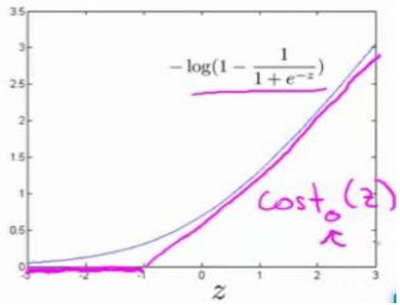
如果我们用一个新的代价函数来代替，即这条从 0 点开始的水平直线，然后是一条斜线，像上图。那么，现在让我给这两个方程命名，左边的函数，我称之为 \(\cos t_{1} ( z )\) ，同时，右边函数我称它为 \(\cos t_{0} ( z )\) 。这里的下标是指在代价函数中，对应的 \(y = 1\) 和 \(y = 0\) 的情况，拥有了这些定义后，现在，我们就开始构建支持向量机。
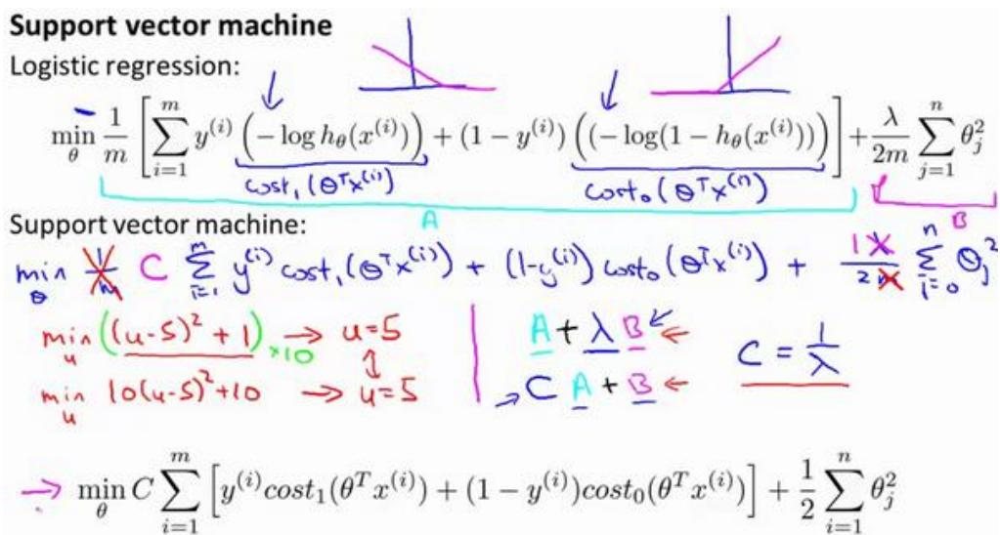
这是我们在逻辑回归中使用代价函数J(θ)。也许这个方程看起来不是非常熟悉。这是因为之前有个负号在方程外面，但是，这里我所做的是，将负号移到了表达式的里面，这样做使得方程看起来有些不同。对于支持向量机而言，实质上我们要将这替换为 \(\cos t_{1} ( z )\) ，也就是 \(\cos t_{1} ( \theta^{T} x )\) ，同样地，我也将这一项替换为 \(\cos t_{0} ( z )\) ，也就是代价 \(\cos t_{0} ( \theta^{T} x )\) 。这里的代价函数 \(\mathsf{c o s} t_{1}\) ，就是之前所提到的那条线。此外，代价函数 \(\boldsymbol{\mathrm{c o s}} t_{0}\) ，也是上面所介绍过的那条线。因此，对于支持向量机，我们得到了这里的最小化问题，即:
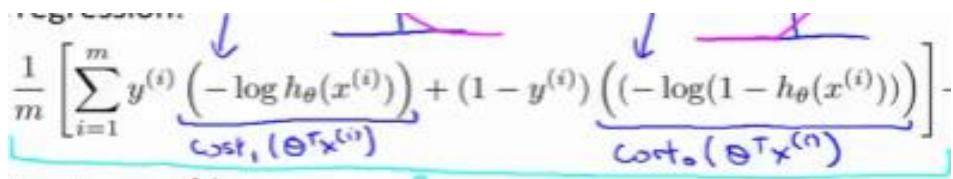
然后，再加上正则化参数。现在，按照支持向量机的惯例，事实上，我们的书写会稍微有些不同，代价函数的参数表示也会稍微有些不同。
首先，我们要除去1/m这一项，当然，这仅仅是由于人们使用支持向量机时，对比于逻辑回归而言，不同的习惯所致，但这里我所说的意思是：你知道，我将要做的是仅仅除去1/m这一项，但是，这也会得出同样的 θ 最优值，好的，因为1/m 仅是个常量，因此，你知道在这个最小化问题中，无论前面是否有1/m 这一项，最终我所得到的最优值θ都是一样的。这里我的意思是，先给你举一个实例，假定有一最小化问题：即要求当 \(( u - 5 ) ^{2} + 1\) 取得最小值时的x值。这时最小值为：当j=5时取得最小值。
现在，如果我们想要将这个目标函数乘上常数 10，这里我的最小化问题就变成了：求使得 \(10 \times ( u - 5 ) ^{2} + 10\) 最小的值u，然而，使得这里最小的y值仍为5。因此将一些常数乘以你的最小化项，这并不会改变最小化该方程时得到x值。因此，这里我所做的是删去常量m。也相同的，我将目标函数乘上一个常量m，并不会改变取得最小值时的x值。
第二点概念上的变化，我们只是指在使用支持向量机时，一些如下的标准惯例，而不是逻辑回归。因此，对于逻辑回归，在目标函数中，我们有两项：第一个是训练样本的代价，第二个是我们的正则化项，我们不得不去用这一项来平衡。这就相当于我们想要最小化A加上正则化参数λ，然后乘以其他项B对吧？这里的A表示这里的第一项，同时我用B表示第二项，但不包括λ，我们不是优化这里的 \(A + \lambda \times B\) 。我们所做的是通过设置不同正则参数λ达到优化目的。这样，我们就能够权衡对应的项，是使得训练样本拟合的更好。即最小化A。还是保证正则参数足够小，也即是对于B项而言，但对于支持向量机，按照惯例，我们将使用一个不同的参数替换这里使用的λ来权衡这两项。你知道，就是第一项和第二项我们依照惯例使用一个不同的参数称为C，同时改为优化目标， \(C \times A + B\) 因此，在逻辑回归中，如果给定λ，一个非常大的值，意味着给予 B更大的权重。而这里，就对应于将λ 设定为非常小的值，那么，相应的将会给B比给A更大的权重。因此，这只是一种不同的方式来控制这种权衡或者一种不同的方法，即用参数来决定是更关心第一项的优化，还是更关心第二项的优化。当然你也可以把这里的参数C 考虑成1/λ，同 1/λ所扮演的角色相同，并且这两个方程或这两个表达式并不相同，因为 \(\ C = 1 / \lambda\) ，但是也并不全是这样，如果当 \(C = 1 / \lambda\) 时，这两个优化目标应当得到相同的值，相同的最优值 θ。因此，就用它们来代替。那么，我现在删掉这里的λ，并且用常数C来代替。因此，这就得到了在支持向量机中我们的整个优化目标函数。然后最小化这个目标函数，得到SVM 学习到的参数θ。
Hypothesis:
最后有别于逻辑回归输出的概率。在这里，我们的代价函数，当最小化代价函数，获得参数θ时，支持向量机所做的是它来直接预测y的值等于 1，还是等于0。因此，这个假设函数会预测1。当 \(\theta^{T} x\) 大于或者等于 0时，或者等于 0时，所以学习参数θ就是支持向量机假设函数的形式。那么，这就是支持向量机数学上的定义。
在接下来的视频中，让我们再回去从直观的角度看看优化目标，实际上是在做什么，以及 SVM 的假设函数将会学习什么，同时也会谈谈如何做些许修改，学习更加复杂、非线性的函数。
12.2 大边界的直观理解
参考视频: 12 - 2 - Large Margin Intuition (11 min).mkv
人们有时将支持向量机看作是大间距分类器。在这一部分，我将介绍其中的含义，这有助于我们直观理解SVM模型的假设是什么样的。
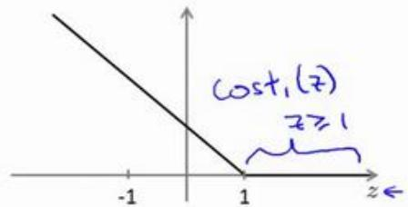
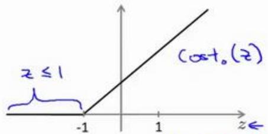
这是我的支持向量机模型的代价函数，在左边这里我画出了关于z的代价函数 \(\cos t_{1} ( z )\) 此函数用于正样本，而在右边这里我画出了关于z的代价函数 \(\cos t_{0} ( z )\) ，横轴表 \(\overline{{\overline{{\mathbf{\Omega}}}}} \overline{{\mathbf{\Omega}}} \overline{{z}}\) ，现在让我们考虑一下，最小化这些代价函数的必要条件是什么。如果你有一个正样本， \(y = 1\) ，则只有在z >= 1时，代价函数 \(\cos t_{1} ( z )\) 才等于0。
换句话说，如果你有一个正样本，我们会希望 \(\theta^{T} x > = 1\) ，反之，如果 \(y = 0\) ，我们观察一下，函数 \(\cos t_{0} ( z )\) ，它只有在 \(z < = - 1\) 的区间里函数值为 0。这是支持向量机的一个有趣性质。事实上，如果你有一个正样本 \(y = 1\) ，则其实我们仅仅要求 \(\theta^{T} x\) 大于等于0，就能将该样本恰当分出，这是因为如果 \(\theta^{T} x {>} 0\) 大的话，我们的模型代价函数值为0，类似地，如果你有一个负样本，则仅需要 \(\scriptstyle{\theta^{T} x < = 0}\) 就会将负例正确分离，但是，支持向量机的要求更高，不仅仅要能正确分开输入的样本，即不仅仅要求 \(\theta^{T} x {>} 0\) ，我们需要的是比0 值大很多，比如大于等于1，我也想这个比0小很多，比如我希望它小于等于-1，这就相当于在支持向量机中嵌入了一个额外的安全因子，或者说安全的间距因子。
当然，逻辑回归做了类似的事情。但是让我们看一下，在支持向量机中，这个因子会导致什么结果。具体而言，我接下来会考虑一个特例。我们将这个常数C设置成一个非常大的值。比如我们假设C的值为 100000 或者其它非常大的数，然后来观察支持向量机会给出什么结果？
SVM Decision Boundary
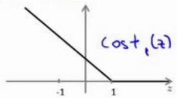
Whenever \(\boldsymbol{y} ^{( i )} = 0 :\)
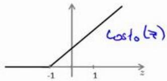
如果 C非常大，则最小化代价函数的时候，我们将会很希望找到一个使第一项为 0 的最优解。因此，让我们尝试在代价项的第一项为0的情形下理解该优化问题。比如我们可以把C设置成了非常大的常数，这将给我们一些关于支持向量机模型的直观感受。
我们已经看到输入一个训练样本标签为 \(| y = 1\) ，你想令第一项为 0，你需要做的是找到一个θ，使得 \(\partial^{T} x > = 1\) ，类似地，对于一个训练样本，标签为 \(| y = 0\) ，为了使 \(\cos t_{0} ( z )\) 函数的值为0，我们需要 \(\theta^{T} x < = - 1\) 。因此，现在考虑我们的优化问题。选择参数，使得第一项等于 0，就会导致下面的优化问题，因为我们将选择参数使第一项为 0，因此这个函数的第一项为0，因此是C乘以0 加上二分之一乘以第二项。这里第一项是C乘以0，因此可以将其删去，因为我知道它是 0。
这将遵从以下的约束： \(\theta^{T} x^{( i )} > = 1\) ，如果 \(\boldsymbol y^{( i )}\) 是等于1 的， \(\theta^{T} x^{( i )} < = - 1\) ，如果样本y是一个负样本，这样当你求解这个优化问题的时候，当你最小化这个关于变量θ的函数的时候，你会得到一个非常有趣的决策边界。
SVM Decision Boundary: Linearly separable case
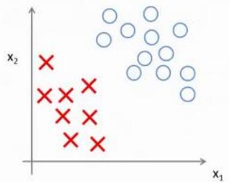
具体而言，如果你考察这样一个数据集，其中有正样本，也有负样本，可以看到这个数据集是线性可分的。我的意思是，存在一条直线把正负样本分开。当然有多条不同的直线，可以把正样本和负样本完全分开。
SVM Decision Boundary: Linearly separable case
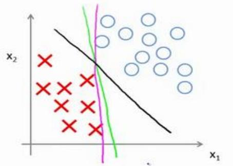
比如，这就是一个决策边界可以把正样本和负样本分开。但是多多少少这个看起来并不是非常自然是么?
或者我们可以画一条更差的决策界，这是另一条决策边界，可以将正样本和负样本分开，但仅仅是勉强分开，这些决策边界看起来都不是特别好的选择，支持向量机将会选择这个黑色的决策边界，相较于之前我用粉色或者绿色画的决策界。这条黑色的看起来好得多，黑线看起来是更稳健的决策界。在分离正样本和负样本上它显得的更好。数学上来讲，这是什么意思呢？这条黑线有更大的距离，这个距离叫做间距(margin)。
SVM Decision Boundary: Linearly separable case
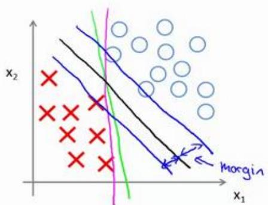
Large margin classifier
当画出这两条额外的蓝线，我们看到黑色的决策界和训练样本之间有更大的最短距离。然而粉线和蓝线离训练样本就非常近，在分离样本的时候就会比黑线表现差。因此，这个距离叫做支持向量机的间距，而这是支持向量机具有鲁棒性的原因，因为它努力用一个最大间距来分离样本。因此支持向量机有时被称为大间距分类器，而这其实是求解上一页幻灯片上优化问题的结果。
我知道你也许想知道求解上一页幻灯片中的优化问题为什么会产生这个结果？它是如
何产生这个大间距分类器的呢？我知道我还没有解释这一点。
我将会从直观上略述为什么这个优化问题会产生大间距分类器。总之这个图示有助于你理解支持向量机模型的做法，即努力将正样本和负样本用最大的间距分开。
Large margin classifier in presence of outliers
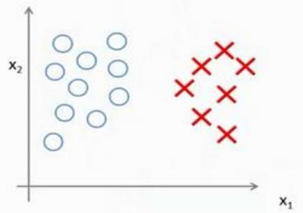
在本节课中关于大间距分类器，我想讲最后一点：我们将这个大间距分类器中的正则化因子常数C设置的非常大，我记得我将其设置为了100000，因此对这样的一个数据集，也许我们将选择这样的决策界，从而最大间距地分离开正样本和负样本。那么在让代价函数最小化的过程中，我们希望找出在y = 1和j=0两种情况下都使得代价函数中左边的这一项尽量为零的参数。如果我们找到了这样的参数，则我们的最小化问题便转变成：
事实上，支持向量机现在要比这个大间距分类器所体现得更成熟，尤其是当你使用大间距分类器的时候，你的学习算法会受异常点(outlier) 的影响。比如我们加入一个额外的正样本。
Large margin classifier in presence of outliers
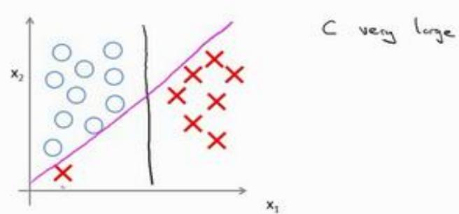
在这里，如果你加了这个样本，为了将样本用最大间距分开，也许我最终会得到一条类似这样的决策界，对么？就是这条粉色的线，仅仅基于一个异常值，仅仅基于一个样本，就将我的决策界从这条黑线变到这条粉线，这实在是不明智的。而如果正则化参数C，设置的非常大，这事实上正是支持向量机将会做的。它将决策界，从黑线变到了粉线，但是如果C设置的小一点，如果你将C设置的不要太大，则你最终会得到这条黑线，当然数据如果不是线性可分的，如果你在这里有一些正样本或者你在这里有一些负样本，则支持向量机也会将它们恰当分开。因此，大间距分类器的描述，仅仅是从直观上给出了正则化参数C非常大的情形，同时，要提醒你C的作用类似于1/λ，λ是我们之前使用过的正则化参数。这只是C非常大的情形，或者等价地 λ 非常小的情形。你最终会得到类似粉线这样的决策界，但是实际上应用支持向量机的时候，当C不是非常非常大的时候，它可以忽略掉一些异常点的影响，得到更好的决策界。甚至当你的数据不是线性可分的时候，支持向量机也可以给出好的结果。
回顾 C = 1/λ，因此：
C 较大时，相当于 λ 较小，可能会导致过拟合，高方差。
C 较小时，相当于 λ 较大，可能会导致低拟合，高偏差。
我们稍后会介绍支持向量机的偏差和方差，希望在那时候关于如何处理参数的这种平衡会变得更加清晰。我希望，这节课给出了一些关于为什么支持向量机被看做大间距分类器的直观理解。它用最大间距将样本区分开，尽管从技术上讲，这只有当参数C是非常大的时候是真的，但是它对于理解支持向量机是有益的。
本节课中我们略去了一步，那就是我们在幻灯片中给出的优化问题。为什么会是这样的？它是如何得出大间距分类器的？我在本节中没有讲解，在下一节课中，我将略述这些问题背后的数学原理，来解释这个优化问题是如何得到一个大间距分类器的。
12.3大边界分类背后的数学（选修）
参考视频: 12 - 3 - Mathematics Behind Large Margin Classification (Optional) (20 min).mkv
在本节课中，我将介绍一些大间隔分类背后的数学原理。本节为选学部分，你完全可以跳过它，但是听听这节课可能让你对支持向量机中的优化问题，以及如何得到大间距分类器，产生更好的直观理解。
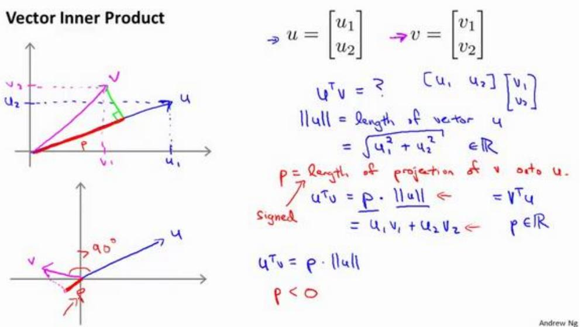
首先，让我来给大家复习一下关于向量内积的知识。假设我有两个向量，u和v，我将它们写在这里。两个都是二维向量，我们看一下， \(u^{T} {\boldsymbol{\cdot}}\) v的结果。 \(u^{T} v\) 也叫做向量u和v之间的内积。由于是二维向量，我可以将它们画在这个图上。我们说，这就是向量u即在横轴上，取值为某个 \(u_{1}\) ，而在纵轴上，高度是某个 \(u_{2}\) 作为u的第二个分量。现在，很容易计算的一个量就是向量x的范数。∥u∥表示u的范数，即u的长度，即向量x的欧几里得长度。根据毕达哥拉斯定理， \(\| u \| = \sqrt{u_{1} ^{2} + u_{2} ^{2}}\) ，这是向量x的长度，它是一个实数。现在你知道了这个的长度是多少了。我刚刚画的这个向量的长度就知道了。
现在让我们回头来看向量 \(\boldsymbol{v}\) ，因为我们想计算内积。v是另一个向量，它的两个分量 \(v_{1}\) 和 \(| v_{2}\) 是已知的。向量v可以画在这里，现在让我们来看看如何计算u和v之间的内积。这就是具体做法，我们将向量v投影到向量u上，我们做一个直角投影，或者说一个90度投影将其投影到u上，接下来我度量这条红线的长度。我称这条红线的长度为p，因此p就是长度，或者说是向量v投影到向量u上的量，我将它写下来，p是v投影到向量u上的长度，因此可以将\(u^{T} v = p \cdot \lVert u \rVert\) ，或者说u的长度。这是计算内积的一种方法。如果你从几何上画出 p的值，同时画出u的范数，你也会同样地计算出内积，答案是一样的。另一个计算公式是： \(\boldsymbol{u} ^ T , \}\) u^T v就是\([ u_{1} u_{2} ]\) 这个一行两列的矩阵乘以 \(v_{\mathrm{ c }}\) 。因此可以得到 \(\boldsymbol{u} _{1} \times \boldsymbol{v} _{1} + \boldsymbol{u} _{2} \times \boldsymbol{v} _{2}\) 。根据线性代数的知识，这两个公式会给出同样的结果。顺便说一句， \(u^{T} v = v^{T} u\) 。因此如果你将u和v交换位置，将u投影到v上，而不是将v投影到u上，然后做同样地计算，只是把u和v的位置交换一下，你事实上可以得到同样的结果。申明一点，在这个等式中u的范数是一个实数，p也是一个实数，因此 \(\boldsymbol{u} ^{T} \boldsymbol{\imath}\) u^T v就是两个实数正常相乘。
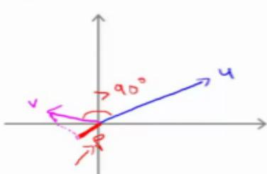
最后一点，需要注意的就是 \(p\) 值， \(p .\) 事实上是有符号的，即它可能是正值，也可能是负值。我的意思是说，如果u是一个类似这样的向量，v是一个类似这样的向量，u和v之间的夹角大于 90 度，则如果将v投影到 \(\lvert u .\) 上，会得到这样的一个投影，这是 \(_{: p}\) 的长度，在这个情形下我们仍然有 \(u^{T} v\) 是等于p乘以u的范数。唯一一点不同的是p在这里是负的。在内积计算中，如果u和v之间的夹角小于 90 度，那么那条红线的长度 \(\dot{\boldsymbol{p}}\) 是正值。然而如果这个夹角大于 90度，则 \(| p |\) 将会是负的。就是这个小线段的长度是负的。如果它们之间的夹角大于 90度，两个向量之间的内积也是负的。这就是关于向量内积的知识。我们接下来将会使用这些关于向量内积的性质试图来理解支持向量机中的目标函数。
SVM Decision Boundary
这就是我们先前给出的支持向量机模型中的目标函数。为了讲解方便，我做一点简化，仅仅是为了让目标函数更容易被分析。
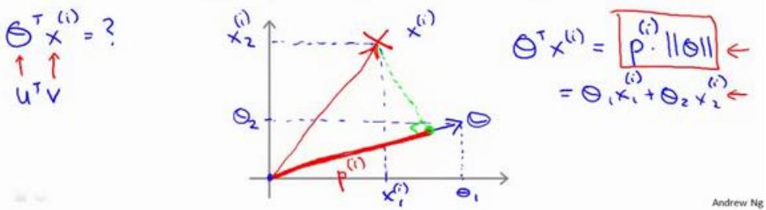
我接下来忽略掉截距，令 \(\theta_{0} = 0\) ，这样更容易画示意图。我将特征数n置为2，因此我们仅有两个特征 \(x_{1} , x_{2}\) ，现在我们来看一下目标函数，支持向量机的优化目标函数。当我们仅有两个特征，即 \(n = 2\) 时，这个式子可以写作： \(\begin{array} {r} {\frac{1} {2} ( \theta_{1} ^{2} + \theta_{2} ^{2} ) = \frac{1} {2} \Big ( \sqrt{\theta_{1} ^{2} + \theta_{2} ^{2}} \Big ) ^{2}} \end{array}\) ，我们只有两个参数 \(\theta_{1} , \theta_{2}\) 。你可能注意到括号里面的这一项是向量x的范数，或者说是向量x的长度。我的意思是如果我们将向量 \(\boldsymbol{\cdot} \boldsymbol{\theta}\) 写出来，那么我刚刚画红线的这一项就是向量 \(\cdot \theta\) 的长度或范数。这里我们用的是之前学过的向量范数的定义，事实上这就等于向量x的长度。
当然你可以将其写作 \(\theta_{0} , \theta_{1} , \theta_{2}\) ，如果 \(\theta_{0} = 0\) ，那就是 \(\theta_{1} , \theta_{2}\) 的长度。在这里我将忽略 \(\cdot \theta_{0}\) ，这样来写θ的范数，它仅仅和 \(\theta_{1} , \theta_{2}\) 有关。但是，数学上不管你是否包含，其实并没有差别，因此在我们接下来的推导中去掉 \({{\theta} _{0}}\) 不会有影响这意味着我们的目标函数是等于 \(\cdot{\frac{1} {2}} \| \theta \| ^{2}\) 。因此支持向量机做的全部事情，就是极小化参数向量θ范数的平方，或者说长度的平方。
现在我将要看看这些项： \(\theta^{T}\) x更深入地理解它们的含义。给定参数向量θ给定一个样本x，这等于什么呢?在前一页幻灯片上，我们画出了在不同情形下， \(u^{T} v\) 的示意图，我们将会使用这些概念，θ和 \(\mathsf{l} \boldsymbol{x} ^{( i )}\) 就类似于 \(_ u\) 和v 。
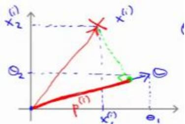
让我们看一下示意图：我们考察一个单一的训练样本，我有一个正样本在这里，用一个叉来表示这个样本 \(x^{( i )}\) ，意思是在水平轴上取值为 \(x_{1} ^{( i )}\) ，在竖直轴上取值为 \(| x_{2} ^{( i )}\) 。这就是我画出的训练样本。尽管我没有将其真的看做向量。它事实上就是一个始于原点，终点位置在这个训练样本点的向量。现在，我们有一个参数向量我会将它也画成向量。我将 \(\mathbf{\nabla} \cdot \theta_{1}\) 画在横轴这里，将 \(\theta_{2}\) 画在纵轴这里，那么内积 \(\mathbf{\boldsymbol{\theta}} ^{T} \boldsymbol{x} ^{( i )}\) 将会是什么呢？
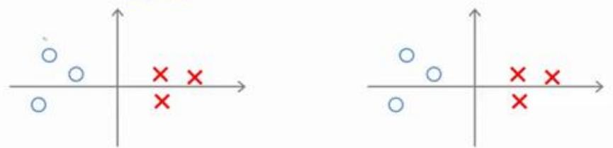
使用我们之前的方法，我们计算的方式就是我将训练样本投影到参数向量 y，然后我来看一看这个线段的长度，我将它画成红色。我将它称为 \(| p^{( i )}\) 用来表示这是第 m个训练样本在参数向量θ上的投影。根据我们之前幻灯片的内容，我们知道的是 \(\theta^{T} x^{( i )}\) 将会等于 \(\dot{\boldsymbol{p}}\) 乘以向量 θ 的长度或范数。这就等 \(\mathbb{F} \boldsymbol{\theta} _{1} \cdot \boldsymbol{x} _{1} ^{( i )} + \boldsymbol{\theta} _{2} \cdot \boldsymbol{x} _{2} ^{( i )}\) 。这两种方式是等价的，都可以用来计算 \(\cdot \theta\) 和 \(\mathsf{I} _{\boldsymbol{x}} ( i )\) 之间的内积。
这告诉了我们什么呢？这里表达的意思是：这个 \(\theta^{T} x^{( i )} > = 1\) 或者 \(\theta^{T} x^{( i )} < - 1\) 的,约束是可以被 \(\cdot \boldsymbol{p} ^{( i )}\) ⋅ ∥θ∥ \(> = 1\) 这个约束所代替的。因为 \(\theta^{T} x^{( i )} = p^{( i )}\) ⋅∥θ∥ ，将其写入我们的优化目标。我们将会得到没有了约束， \(\theta^{T} x^{( i )}\) 而变成了 \(\boldsymbol{p} ^{( i )}\) ⋅ ∥θ∥。
需要提醒一点，我们之前曾讲过这个优化目标函数可以被写成等 \(\mathbb{F} _{\frac{1} {2}} ^{\frac{1} {1}} \lVert \theta \rVert^{2}\)
现在让我们考虑下面这里的训练样本。现在，继续使用之前的简化，即 \(\theta_{0} = 0\) ，我们来看一下支持向量机会选择什么样的决策界。这是一种选择，我们假设支持向量机会选择这个决策边界。这不是一个非常好的选择，因为它的间距很小。这个决策界离训练样本的距离很近。我们来看一下为什么支持向量机不会选择它。
对于这样选择的参数θ，可以看到参数向量θ事实上是和决策界是 90度正交的，因此这个绿色的决策界对应着一个参数向量θ这个方向,顺便提一句 \(\theta_{0} = 0\) 的简化仅仅意味着决策界必须通过原点(0,0)。现在让我们看一下这对于优化目标函数意味着什么。
SVM Decision Boundary
where \(\overline{{p^{( i )}}}\) is the projection of \(x^{( i )}\) onto the vector θ
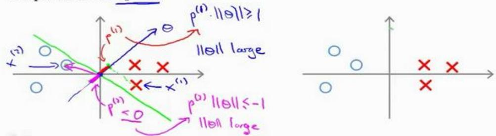
比如这个样本，我们假设它是我的第一个样本 \(\cdot x^{( 1 )}\) ，如果我考察这个样本到参数θ的投影，投影是这个短的红线段，就等 \(\bar{\mathcal{F}} p^{( 1 )}\) ，它非常短。类似地，这个样本如果它恰好是 \(x^{( 2 )}\) 我的第二个训练样本，则它到θ的投影在这里。我将它画成粉色，这个短的粉色线段是 \(\cdot p^{( 2 )}\) 即第二个样本到我的参数向量x的投影。因此，这个投影非常短。 \(p^{( 2 )}\) 事实上是一个负值，\(p^{( 2 )}\) 是在相反的方向，这个向量和参数向量x的夹角大于90度， \(p^{( 2 )}\) 的值小于 0。
我们会发现这些 \(\mathbf{\boldsymbol{p}} ^{( i )}\) 将会是非常小的数，因此当我们考察优化目标函数的时候，对于正样本而言，我们需 \(\varlimsup_{\bf \phi} p^{( i )} \cdot \| \theta \| > = 1\) ,但是如果 \(\boldsymbol{p} ^{( i )}\) 在这里非常小,那就意味着我们需要θ的范数非常大.因为如果 \(p^{( 1 )}\) 很小,而我们希望 $ {p^{( 1 )}}$ ⋅ ∥θ∥ \(> = 1 .\) ,令其实现的唯一的办法就是这两个数较大。如果 \(p^{( 1 )}\) 小，我们就希望θ的范数大。类似地，对于负样本而言我们需要 \(\cdot p^{( 2 )}\) ∥θ∥ \(< = - 1\) 。我们已经在这个样本中看到 \(\mathfrak{p} ^{( 2 )}\) 会是一个非常小的数，因此唯一的办法就是θ的范数变大。但是我们的目标函数是希望找到一个参数θ，它的范数是小的。因此，这看起来不像是一个好的参数向量x的选择。
where \(\overline{{p^{( i )}}}\) is the projection of \(x^{( i )}\) onto the vector θ.
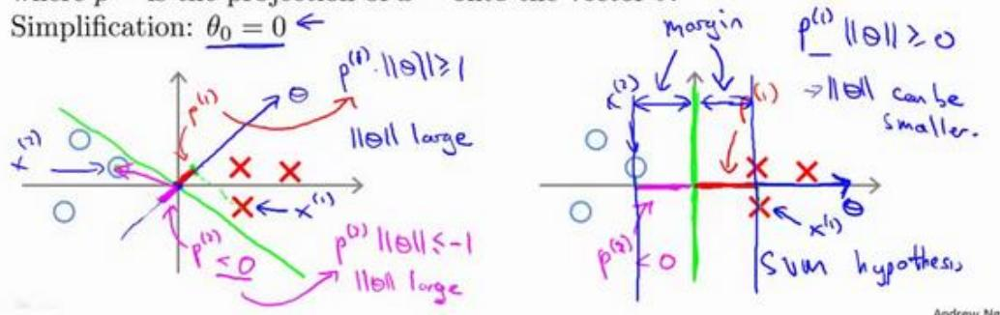
相反的，来看一个不同的决策边界。比如说，支持向量机选择了这个决策界，现在状况会有很大不同。如果这是决策界，这就是相对应的参数θ的方向，因此，在这个决策界之下，垂直线是决策界。使用线性代数的知识，可以说明，这个绿色的决策界有一个垂直于它的向量θ。现在如果你考察你的数据在横轴θ上的投影，比如这个我之前提到的样本，我的样本\(x^{( 1 )}\) ，当我将它投影到横轴θ上，或说投影到θ上，就会得到这样 \(\cdot p^{( 1 )}\) 。它的长度是 \(\mathfrak{p} ^{( 1 )}\) ，另一个样本，那个样本是 \(x^{( 2 )}\) 。我做同样的投影，我会发现， \(p^{( 2 )}\) 的长度是负值。你会注意到现在\(p^{( 1 )}\) 和 \(p^{( 2 )}\) 这些投影长度是长多了。如果我们仍然要满足这些约束， \(P^{( i )} \cdot \| \theta \| > 1\) ，则因为 \(I p^{( 1 )}\) 变大了，θ的范数就可以变小了。因此这意味着通过选择右边的决策界，而不是左边的那个，支持向量机可以使参数θ的范数变小很多。因此，如果我们想令θ的范数变小，从而令θ范数的平方变小，就能让支持向量机选择右边的决策界。这就是支持向量机如何能有效地产生大间距分类的原因。
看这条绿线，这个绿色的决策界。我们希望正样本和负样本投影到θ的值大。要做到这一点的唯一方式就是选择这条绿线做决策界。这是大间距决策界来区分开正样本和负样本这个间距的值。这个间距的值就是 \(p^{( 1 )} , p^{( 2 )} , p^{( 3 )}\) 等等的值。通过让间距变大，即通过这些\(p^{( 1 )} , p^{( 2 )} , p^{( 3 )}\) 等等的值，支持向量机最终可以找到一个较小的θ范数。这正是支持向量机中最小化目标函数的目的。
以上就是为什么支持向量机最终会找到大间距分类器的原因。因为它试图极大化这些\(\boldsymbol{p} ^{( i )}\) 的范数，它们是训练样本到决策边界的距离。最后一点，我们的推导自始至终使用了这个简化假设，就是参数 \({{\theta} _{0}} = 0\) 。
SVM Decision Boundary
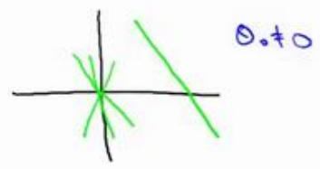
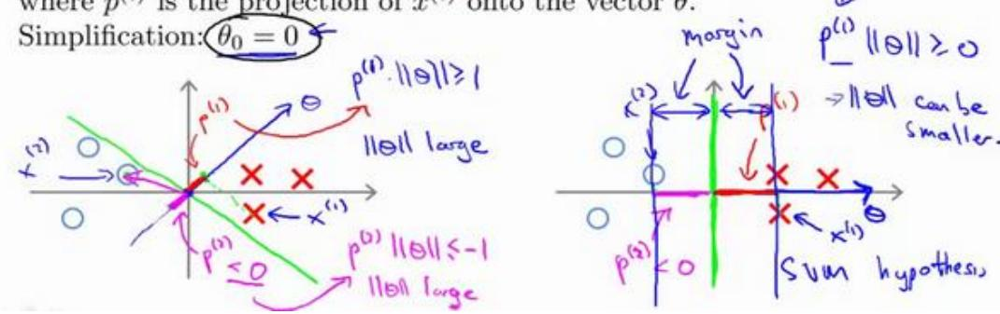
就像我之前提到的。这个的作用是： \(\theta_{0} = 0\) 的意思是我们让决策界通过原点。如果你令\(\theta_{0}\) 不是0 的话，含义就是你希望决策界不通过原点。我将不会做全部的推导。实际上，支持向量机产生大间距分类器的结论，会被证明同样成立，证明方式是非常类似的，是我们刚刚做的证明的推广。
之前视频中说过，即便 \(\theta_{0}\) 不等于0，支持向量机要做的事情都是优化这个目标函数对应着y值非常大的情况，但是可以说明的是，即便 \(\mathbf{\delta} _{\theta_{0}}\) 不等于 0，支持向量机仍然会找到正样本和负样本之间的大间距分隔。
总之，我们解释了为什么支持向量机是一个大间距分类器。在下一节我们，将开始讨论如何利用支持向量机的原理，应用它们建立一个复杂的非线性分类器。
12.4 核函数 1
参考视频: 12 - 4 - Kernels I (16 min).mkv
回顾我们之前讨论过可以使用高级数的多项式模型来解决无法用直线进行分隔的分类问题：
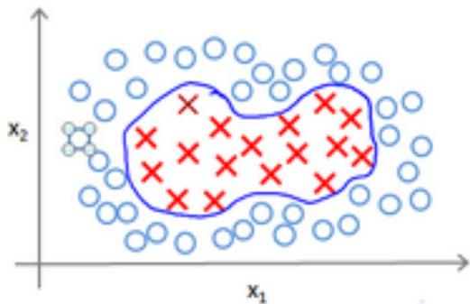
为了获得上图所示的判定边界，我们的模型可能是 \(\theta_{0} + \theta_{1} x_{1} + \theta_{2} x_{2} + \theta_{3} x_{1} x_{2} + \theta_{4} x_{1} ^{2} +\) \(\theta_{5} x_{2} ^{2} + \cdots\) 的形式。
我们可以用一系列的新的特征f 来替换模型中的每一项。例如令： \(f_{1} = x_{1} , f_{2} = x_{2} , f_{3} =\) \(x_{1} x_{2} , f_{4} = x_{1} ^{2} , f_{5} = x_{2} ^{2}\)
...得到 \(h_{\theta} ( x ) = \theta_{1} f_{1} + \theta_{2} f_{2} + . . . . + \theta_{n} f_{n}\) 。然而，除了对原有的特征进行组合以外，有没有更好的方法来构造 \(f_{1} , f_{2} , f_{3} ?\) 我们可以利用核函数来计算出新的特征。
给定一个训练实例 x ， 我们利用 x 的各个特征与我们预先选定的地标(landmarks)l(1), l(2), l(3)的近似程度来选取新的特征 \(\cdot f_{1} , f_{2} , f_{3}\) C
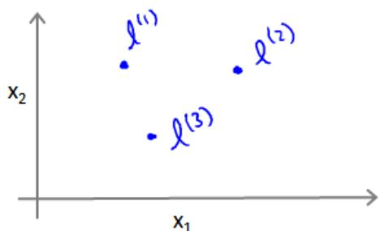
例如： \(\begin{array} {r} {f_{1} = s i m i l a r i t y ( x , l^{( 1 )} ) = e ( - \frac{{\| x - l^{( 1 )} \|} ^{2}} {2 {\sigma} ^{2}} )} \end{array}\)
其中： \(\begin{array} {r l} {\left\| x - l^{( 1 )} \right\| ^{2} = \sum} & {{} _{j = 1} ^{n} ( x_{j} - l_{j} ^{( 1 )} ) ^{2}} \end{array}\) ，为实例x中所有特征与地标l(1)之间的距离的和。上例中的 \(s i m i l a r i t y ( x , l^{( 1 )} )\) 就是核函数，具体而言，这里是一个高斯核函数(Gaussian Kernel)。注：这个函数与正态分布没什么实际上的关系，只是看上去像而已。
这些地标的作用是什么？如果一个训练实例x与地标l之间的距离近似于0，则新特征 f
近似于 \(e^{- 0} = 1\) ，如果训练实例x与地标l之间距离较远，则f近似于 \(e^{- ( - \infty / \operatorname{t a x} \mathcal{\Lambda} \beta / \beta \beta )} = 0\) 6
假设我们的训练实例含有两个特征 \([ x_{1} ~ x_{2} ]\) ，给定地标 \({\cal l} ^{( 1 )}\) 与不同的x值。见下图：
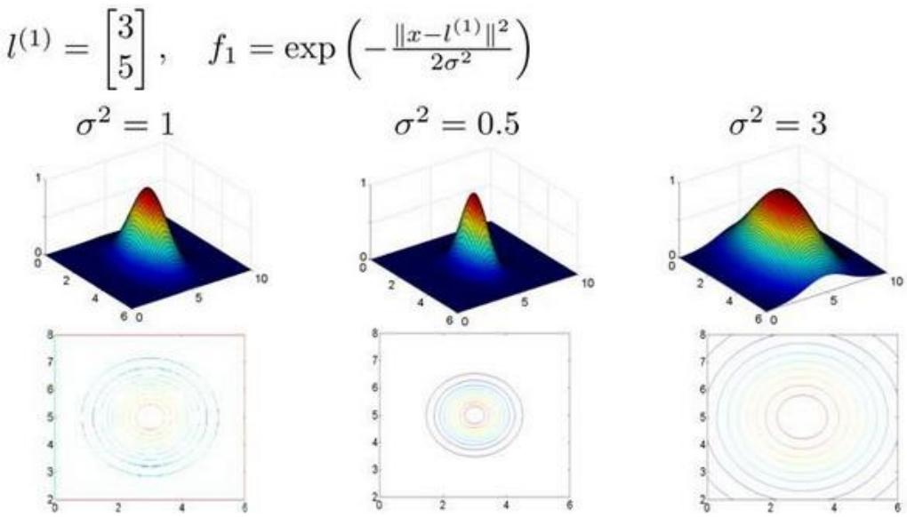
图中水平面的坐标为 \(x_{1}\) ， \(x_{2}\) 而垂直坐标轴代表f。可以看出，只有当x与 \(l^{( 1 )}\) 重合时f才具有最大值。随着x的改变y值改变的速率受到 \(| \sigma^{2}\) 的控制。
在下图中，当实例处于洋红色的点位置处，因为其离 \(\mathcal{l} ^{( 1 )}\) 更近，但是离 \(\mathcal{l} ^{( 2 )}\) 和 \({l^{( 3 )}}\) 较远，因此 \(f_{1}\) 接近 1，而 \(f_{2} , f_{3}\) 接近 0。因此 \({\mathrm{\Delta} h} _{\theta} ( x ) = \theta_{0} + \theta_{1} f_{1} + \theta_{2} f_{2} + \theta_{1} f_{3} > 0\) ，因此预测 \(y = 1\) 。同理可以求出，对于离 \(\mathcal{l} ^{( 2 )}\) 较近的绿色点，也预测 \(| y = 1\) ，但是对于蓝绿色的点，因为其离三个地标都较远，预测 \(y = 0\) 。
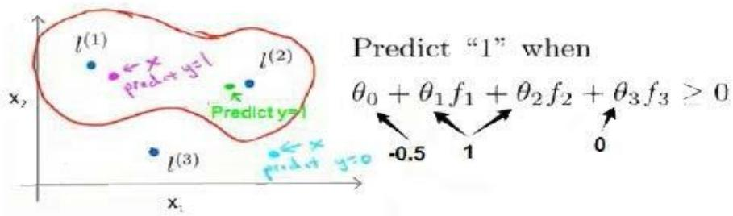
这样，图中红色的封闭曲线所表示的范围，便是我们依据一个单一的训练实例和我们选取的地标所得出的判定边界，在预测时，我们采用的特征不是训练实例本身的特征，而是通过核函数计算出的新特征 \(\cdot f_{1} , f_{2} , f_{3}\) 。## 12.5 核函数 2
参考视频: 12 - 5 - Kernels II (16 min).mkv
在上一节视频里，我们讨论了核函数这个想法，以及怎样利用它去实现支持向量机的一些新特性。在这一节视频中，我将补充一些缺失的细节，并简单的介绍一下怎么在实际中使用应用这些想法。
如何选择地标？
我们通常是根据训练集的数量选择地标的数量，即如果训练集中有m个实例，则我们选取m个地标，并且令 \(\cdot l^{( 1 )} = x^{( 1 )} , l^{( 2 )} = x^{( 2 )} , \dots \dots , l^{( m )} = x^{( m )}\) 。这样做的好处在于：现在我们得到的新特征是建立在原有特征与训练集中所有其他特征之间距离的基础之上的，即：
SVM with Kernels
下面我们将核函数运用到支持向量机中，修改我们的支持向量机假设为：
• 给定x，计算新特征f，当 \(\theta^{T} f > = 0\) 时，预测 \(y = 1\) ，否则反之。
相应地修改代价函数为： \(\begin{array} {r} {\sum_{j = 1} ^{n = m} \theta_{j} ^{2} = \theta^{T} \theta} \end{array}\)
\(\begin{array} {r} {m i n C \sum_{i = 1} ^{m} [ y^{( i )} c o s t_{1} ( \theta^{T} f^{( i )} ) + ( 1 - y^{( i )} ) c o s t_{0} ( \theta^{T} f^{( i )} ) ] + \frac{1} {2} \sum_{j = 1} ^{n = m} \theta_{j} ^{2}} \end{array}\) 在具体实施过程中，我们还需要对最后的正则化项进行些微调整，在计算 \(\begin{array} {r} {\sum_{j = 1} ^{n = m} \theta_{j} ^{2} = \theta^{T} \theta} \end{array}\) 时，我们用 \(\theta^{T} M \theta .\) 代替\(\theta^{T} \theta\) ，其中M是根据我们选择的核函数而不同的一个矩阵。这样做的原因是为了简化计算。
理论上讲，我们也可以在逻辑回归中使用核函数，但是上面使用 M来简化计算的方法不适用与逻辑回归，因此计算将非常耗费时间。
在此，我们不介绍最小化支持向量机的代价函数的方法，你可以使用现有的软件包（如liblinear,libsvm等）。在使用这些软件包最小化我们的代价函数之前，我们通常需要编写核函数，并且如果我们使用高斯核函数，那么在使用之前进行特征缩放是非常必要的。
另外，支持向量机也可以不使用核函数，不使用核函数又称为线性核函数(linear kernel)，当我们不采用非常复杂的函数，或者我们的训练集特征非常多而实例非常少的时候，可以采用这种不带核函数的支持向量机。
下面是支持向量机的两个参数C和σ的影响：
C = 1/λ
C 较大时，相当于λ较小，可能会导致过拟合，高方差；
C 较小时，相当于λ较大，可能会导致低拟合，高偏差；
σ较大时，可能会导致低方差，高偏差；
σ较小时，可能会导致低偏差，高方差。
如果你看了本周的编程作业，你就能亲自实现这些想法，并亲眼看到这些效果。这就是利用核函数的支持向量机算法，希望这些关于偏差和方差的讨论，能给你一些对于算法结果预期的直观印象。
12.6 使用支持向量机
参考视频: 12 - 6 - Using An SVM (21 min).mkv
目前为止，我们已经讨论了 SVM 比较抽象的层面，在这个视频中我将要讨论到为了运行或者运用SVM。你实际上所需要的一些东西：支持向量机算法，提出了一个特别优化的问题。但是就如在之前的视频中我简单提到的，我真的不建议你自己写软件来求解参数θ，因此由于今天我们中的很少人，或者其实没有人考虑过自己写代码来转换矩阵，或求一个数的平方根等我们只是知道如何去调用库函数来实现这些功能。同样的，用以解决 SVM 最优化问题的软件很复杂，且已经有研究者做了很多年数值优化了。因此你提出好的软件库和好的软件包来做这样一些事儿。然后强烈建议使用高优化软件库中的一个，而不是尝试自己落实一些数据。有许多好的软件库，我正好用得最多的两个是 liblinear和libsvm，但是真的有很多软件库可以用来做这件事儿。你可以连接许多你可能会用来编写学习算法的主要编程语言。
在高斯核函数之外我们还有其他一些选择，如：
多项式核函数（Polynomial Kernel）
字符串核函数（String kernel）
卡方核函数（ chi-square kernel）
直方图交集核函数（histogram intersection kernel）
等等...
这些核函数的目标也都是根据训练集和地标之间的距离来构建新特征，这些核函数需要满足Mercer's定理，才能被支持向量机的优化软件正确处理。
多类分类问题
假设我们利用之前介绍的一对多方法来解决一个多类分类问题。如果一共有k个类，则我们需要k个模型，以及k个参数向量θ。我们同样也可以训练k个支持向量机来解决多类分类问题。但是大多数支持向量机软件包都有内置的多类分类功能，我们只要直接使用即可。
尽管你不去写你自己的SVM 的优化软件，但是你也需要做几件事：
1、是提出参数C的选择。我们在之前的视频中讨论过误差/方差在这方面的性质。
2、你也需要选择内核参数或你想要使用的相似函数，其中一个选择是：我们选择不需要任何内核参数，没有内核参数的理念，也叫线性核函数。因此，如果有人说他使用了线性核的SVM（支持向量机），这就意味这他使用了不带有核函数的SVM（支持向量机）。
从逻辑回归模型，我们得到了支持向量机模型，在两者之间，我们应该如何选择呢？
下面是一些普遍使用的准则：
n为特征数，m为训练样本数。
(1)如果相较于m而言，n要大许多，即训练集数据量不够支持我们训练一个复杂的非线性模型，我们选用逻辑回归模型或者不带核函数的支持向量机。
(2)如果n较小，而且m大小中等，例如n在 1-1000 之间，而m在 10-10000 之间，使用高斯核函数的支持向量机。
(3)如果n较小，而m较大，例如n在1-1000 之间，而m大于50000，则使用支持向量机会非常慢，解决方案是创造、增加更多的特征，然后使用逻辑回归或不带核函数的支持向量机。
值得一提的是，神经网络在以上三种情况下都可能会有较好的表现，但是训练神经网络可能非常慢，选择支持向量机的原因主要在于它的代价函数是凸函数，不存在局部最小值。
今天的SVM 包会工作得很好，但是它们仍然会有一些慢。当你有非常非常大的训练集，且用高斯核函数是在这种情况下，我经常会做的是尝试手动地创建，拥有更多的特征变量，然后用逻辑回归或者不带核函数的支持向量机。如果你看到这个幻灯片，看到了逻辑回归，或者不带核函数的支持向量机。在这个两个地方，我把它们放在一起是有原因的。原因是：逻辑回归和不带核函数的支持向量机它们都是非常相似的算法，不管是逻辑回归还是不带核函数的SVM，通常都会做相似的事情，并给出相似的结果。但是根据你实现的情况，其中一个可能会比另一个更加有效。但是在其中一个算法应用的地方，逻辑回归或不带核函数的SVM另一个也很有可能很有效。但是随着SVM的复杂度增加，当你使用不同的内核函数来学习复杂的非线性函数时，这个体系，你知道的，当你有多达1万（10,000）的样本时，也可能是5万（50,000），你的特征变量的数量这是相当大的。那是一个非常常见的体系，也许在这个体系里，不带核函数的支持向量机就会表现得相当突出。你可以做比这困难得多需要逻辑回归的事情。
最后，神经网络使用于什么时候呢？ 对于所有的这些问题，对于所有的这些不同体系一个设计得很好的神经网络也很有可能会非常有效。有一个缺点是，或者说是有时可能不会使用神经网络的原因是：对于许多这样的问题，神经网络训练起来可能会特别慢，但是如果你有一个非常好的 SVM 实现包，它可能会运行得比较快比神经网络快很多，尽管我们在此之前没有展示，但是事实证明，SVM 具有的优化问题，是一种凸优化问题。因此，好的SVM优化软件包总是会找到全局最小值，或者接近它的值。对于 SVM 你不需要担心局部最优。
在实际应用中，局部最优不是神经网络所需要解决的一个重大问题，所以这是你在使用 SVM的时候不需要太去担心的一个问题。根据你的问题，神经网络可能会比 SVM 慢，尤其是在这样一个体系中，至于这里给出的参考，看上去有些模糊，如果你在考虑一些问题，这些参考会有一些模糊，但是我仍然不能完全确定，我是该用这个算法还是改用那个算法，这个没有太大关系，当我遇到机器学习问题的时候，有时它确实不清楚这是否是最好的算法，但是就如在之前的视频中看到的算法确实很重要。但是通常更加重要的是：你有多少数据，你有多熟练是否擅长做误差分析和排除学习算法，指出如何设定新的特征变量和找出其他能决定你学习算法的变量等方面，通常这些方面会比你使用逻辑回归还是 SVM 这方面更加重要。但是，已经说过了，SVM仍然被广泛认为是一种最强大的学习算法，这是一个体系，包含了什么时候一个有效的方法去学习复杂的非线性函数。因此，实际上与逻辑回归、神经网络、SVM 一起使用这些方法来提高学习算法，我认为你会很好地建立很有技术的状态。（编者注：当时GPU计算比较慢，神经网络还不流行。）
机器学习系统对于一个宽泛的应用领域来说，这是另一个在你军械库里非常强大的工具，你可以把它应用到很多地方，如硅谷、在工业、学术等领域建立许多高性能的机器学习系统。